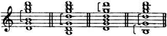
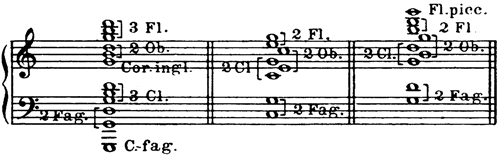
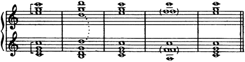

配器法原理：繁體中文版
補充說明
補充說明
1. 現代配器者在寫作密集和聲時，不容許中間聲部留有空隙；古典作曲家則在一定程度上容許這種寫法：

古典作曲家有時容許的密集和弦空隙。
- 四個和弦中的括號標出被討論的聲部間距，原圖不另含英文樂器名稱；
- 不自行補入空缺音。
[聆聽]
這些空隙會造成不良效果，尤其在強奏樂段中。因此，以擴大音程為基本方式的開放排列和聲，只能偶爾使用，而且限於弱奏。木管和聲無論強奏或弱奏，更常採用的都是密集排列。
2. 一般而言，音域跨度很大、聲部較多的和弦，應按自然泛音音列的次序配置：低音域採寬音程（八度、六度），中音域採較小音程（五度、四度），高音域則採密集音程（三度或二度）：-79-

由低至高逐漸密集的多聲部和弦。
- 3 Fl.＝3支長笛，2 Fl.＝2支長笛，Fl. picc.＝短笛；
- 2 Ob.＝2支雙簧管，Cor. ingl.＝英國管；
- 3 Cl.或2 Cl.＝3支或2支豎笛；
- 2 Fag.＝2支低音管，C-fag.＝倍低音管。
原圖三例的音域、音符與括號照原版。
3. 許多時候，正確的聲部進行會要求暫時加倍其中一個聲部。為了這一個聲部，聽覺可以接受均衡受到短暫破壞，並欣賞聲部進行合乎邏輯的準確性。下例可說明我的意思：

上下兩組五小節的和聲進行。
- 第二小節的D同度重複，第四小節兩組各有F同度重複；
- 虛線與括號標示這些聲部關係，依原圖保留。
[聆聽]
上例第二小節的D形成同度重複，原因是上方三聲部與其低八度的對應聲部彼此接近。第四小節的F則在上、下兩組中都形成同度重複。
4. 以四聲部為本質的和聲基礎，絕不是只能由木管承擔。其中一個聲部常交給弦樂弓奏或撥奏。更常見的情形，是把低音聲部獨立處理，讓木管演奏上方三聲部較長時值的和弦。如果再把最高聲部交給一組弦樂，木管便只留下中間兩聲部的持續和聲。前一種情況中，木管的三聲部和聲應自行構成完整整體，不依賴低音的協助，藉此避免空洞的四度、五度。後一種情況中，中間聲部宜具有適度飽滿的音色，音程只選用二度、七度、三度或六度。
前面關於以木管形成和聲，以及分配單一、混合音色的各項說明，-80-同樣適用於持續和弦，也適用於與斷奏和弦快速交替的和聲進行。短促和弦之間若隔著較明顯的休止，聽覺就不那麼容易察覺音色的排列與分配，對聲部進行的注意也較少。逐一考察無數的音色組合，以及和弦各種重複、配置方式，不但沒有必要，也不可能做到。我的目的是指出工作的基本原則，以及應遵循的一般規則。學生掌握這些原則之後，只要花些時間研究總譜，並聆聽管弦樂團的實際演奏，很快就能學會何時採用某些方法、何時改用其他方法。總的來說，建議學生按正常次序安排木管；留意每個和弦的聲部應全部加倍或全部不加倍，因聲部進行而產生的少數例外除外；充分理解之後再採用音色的交叉、包夾配置；最後，把注意力集中在密集聲部寫作。
木管和聲的範例：
a）
獨立和弦。
譜例105：《聖誕夜》排練號148：豎笛、2支低音管。
譜例106：《聖誕夜》開頭：雙簧管、豎笛、低音管（聲部交叉）。
《雪孃》排練號16：2支豎笛、低音管。
《雪孃》排練號79的第5小節：2支雙簧管、2支低音管（參見譜例136）。
*譜例107：《雪孃》排練號197：短笛、2支長笛（震音）。
譜例108：《雪孃》排練號204：2支長笛、2支雙簧管（高音域）。
譜例109：《天方夜譚》開頭：全體木管採不同配置。
*《俄羅斯復活節序曲》排練號A：3支長笛震音（參見譜例176）。
*《薩爾坦王的故事》排練號45：雙簧管、2支低音管。
譜例110：《薩爾坦王的故事》，排練號115之前：混合音色。
譜例111：《薩爾坦王的故事》排練號115及其他類似樂段：三管編制木管的音響極為柔甜。
《薩爾坦王的故事》排練號177：2支雙簧管、2支低音管。
《薩特闊》交響音畫，排練號9：雙簧管、2支豎笛、低音管。
*歌劇《薩特闊》排練號4：英國管、2支豎笛。
歌劇《薩特闊》，排練號5之前：全體木管。
譜例112：《薩特闊》排練號72：三聲部和弦，使用單一與混合音色。
*譜例113：《沙皇的新娘》排練號126：全體木管。
*譜例114：《隱城基捷日傳說》，排練號90之前：包夾配置（第一雙簧管位於高音域）。
譜例115：《隱城基捷日傳說》，排練號161之前：木管與銅管交替。
譜例116：《隱城基捷日傳說》排練號167：除雙簧管外的全體木管，配合合唱。
《隱城基捷日傳說》排練號269：長笛、豎笛、低音管。
*《金雞》排練號125：各種木管樂器，四聲部和聲（參見譜例271）。
《金雞》排練號218：雙簧管、英國管、低音管、倍低音管；另參見排練號254。
譜例117：《金雞》，排練號236之前：混合音色，2支低音管構成低音。
b）
和聲基礎（有時加入法國號）。
《五月之夜》第三幕，排練號L：2支低音管、英國管（參見譜例18）。
《安塔爾》排練號68：3支長笛。
《雪孃》排練號20：2支豎笛，高音域。
《雪孃》，排練號50之前：2支長笛、低音管。
《雪孃》排練號187：2支雙簧管、2支低音管。
《雪孃》排練號274：2支豎笛，低音域（參見譜例9）。
《雪孃》排練號283：長笛、英國管、豎笛、低音管（參見譜例26）。
譜例118：《雪孃》排練號292：木管的開放排列和聲與聲部重複。
譜例119：《雪孃》排練號318–319：2支長笛。
《天方夜譚》第2樂章，排練號B：2支豎笛、低音管，法國號奏持續音（參見譜例1）。
《聖誕夜》排練號1：3支豎笛。
《薩特闊》排練號1：豎笛、低音豎笛、低音管、倍低音管。
譜例120：《薩特闊》排練號49：雙簧管、豎笛、法國號、低音管。
譜例121：《薩特闊》排練號144：豎笛、低音管。
譜例122：《薩特闊》排練號195–196：2支豎笛、低音豎笛。
《沙皇的新娘》排練號80：豎笛、低音管。
《沙皇的新娘》排練號166：移動的和聲聲部，長笛與豎笛（參見譜例22）。
《塞爾維莉亞》排練號59：豎笛低音域、低音管。
*譜例123：《不死的卡什切伊》排練號80：雙簧管與低音管均加弱音器。
*譜例124：《隱城基捷日傳說》排練號52：長笛、低音管。
《隱城基捷日傳說》排練號55：長笛、雙簧管（參見譜例197）。
《隱城基捷日傳說》排練號68：英國管、低音管、倍低音管（參見譜例199）。
譜例124：《隱城基捷日傳說》排練號118：混合音色，2支雙簧管、英國管與3支豎笛。
譯註來源：第二卷印刷頁129：譜例123及124
《隱城基捷日傳說》排練號136：移動的和聲聲部。
《隱城基捷日傳說》，排練號185之前：3支長笛低音域與2支豎笛。
《隱城基捷日傳說》排練號223：長笛、雙簧管、豎笛（參見譜例31）。
*譜例125：《隱城基捷日傳說》排練號247：2支豎笛、低音豎笛。
《隱城基捷日傳說》排練號273：英國管、2支豎笛、低音豎笛、低音管。
*譜例126：《隱城基捷日傳說》排練號355：加弱音器的英國管、豎笛、2支低音管。
*譜例127：《金雞》排練號3：豎笛、低音豎笛、低音管、倍低音管。
《金雞》排練號40–41：低音豎笛與低音管；長笛與豎笛；豎笛與低音豎笛。
*譜例128：《金雞》排練號156：移動的和聲聲部，長笛與豎笛。
查看英文原文
Remarks.
1. Modern orchestrators do not allow any void in the intermediate parts in writing close harmony; it was permitted to some extent by the classics:
[Listen]
These empty spaces create a bad effect especially in forte passages. For this reason widely-divided harmony, which is fundamentally based on the extension of intervals, can be used but seldom and only in piano passages. Close writing is the more frequent form in all harmony devoted to the wood-wind, forte or piano.
2. As a general rule a chord of greatly extended range and in several parts is distributed according to the order of the natural scale, with wide intervals (octaves and sixths), in the bass part, lesser intervals (fifths and fourths) in the middle, and close intervals (3rds or 2nds) in the upper register:-79-
3. In many cases correct progression of parts demands that one of them should be temporarily doubled. In such cases the ear is reconciled to the brief overthrow of balance for the sake of a single part, and is thankful for the logical accuracy of the progression. The following example will illustrate my meaning:
[Listen]
In the second bar of this example the D is doubled in unison on account of the proximity of the three upper parts to their corresponding parts an octave lower. In the fourth bar the F is doubled in unison in both groups.
4. The formation of the harmonic basis, which is essentially in four parts, does not by any means devolve upon the wood-wind alone. One of the parts is often devoted to the strings, arco or pizz. More frequently the bass part is treated separately, the chords of greater value in the three upper parts being allotted to the wood-wind. Then, if the upper part is assigned to a group of strings, there remains nothing for the wind except the sustained harmony in the two middle parts. In the first case the three-part harmony in the wood-wind should form an independent whole, receiving no assistance from the bass; in this manner intervals of open fourths and fifths will be obviated. In the second case it is desirable to provide the intermediate parts with a moderately full tone, choosing no other intervals except seconds, sevenths, thirds or sixths.
All that has been said with regard to the use of wood-wind in the formation of harmony, and the division of simple and mixed-80- timbres applies with equal force to sustained chords, or harmonic progressions interchanging rapidly with staccato chords. In short chords, separated by rests of some importance, the arrangement and division of timbres is not so perceptible to the ear, and progression of parts attracts less attention. It would be useless, nay, impossible to examine the countless combinations of tone colour, all the varieties of duplication and distribution of chords. It has been my aim to denote the fundamental principles upon which to work, and to indicate the general rules to be followed. Once having mastered these, if the student devote a little time to the study of full scores, and listen to them on the orchestra, he will soon learn when certain methods should be used and when to adopt others. The pupil is advised, generally, to write for wood-wind in its normal order of distribution, to take heed that each particular chord is composed entirely either of duplicated or non-duplicated parts, (except in certain cases resulting from progression), to use the methods of crossing and enclosure of timbres with full knowledge of what he is doing, and finally to concentrate his attention on close part-writing.
Examples of wood-wind harmony:
a）
Independent chords.
No. 105. The Christmas Night 148—Cl., 2 Fag.
No. 106."""beginning—Ob., Cl., Fag. (crossing of parts).
Snegourotchka 16—2 Cl., Fag.
"79, 5th bar.—2 Ob., 2 Fag. (cf. Ex. 136).
* No. 107. Snegourotchka 197—Picc., 2 Fl. (tremolando).
No. 108. "204—2 Fl., 2 Ob. (high register).
No. 109. Shéhérazade, beginning—Total wood-wind in different distribution.
* Russian Easter Fête A—3 Fl. tremolando (cf. Ex. 176).
* Tsar Saltan 45 Ob., 2 Fag.
No. 110. Tsar Saltan, before 115—mixed timbres.
No. 111.""115, and other similar passages—very sweet effect of wood-wind in three's.
""177—2 Ob., 2 Fag.
Sadko, Symphonic Tableau 9—Ob., 2 Cl., Fag.
* Sadko, Opera 4—Eng. horn, 2 Cl.
""before 5—Total wood-wind.
No. 112. Sadko 72—Chords in three-part harmony; simple and mixed timbres.
* No. 113. The Tsar's Bride 126 Full wind.
* No. 114. Legend of Kitesh, before 90—Enclosure of parts (Ob. I in the high register).
No. 115."""before 161—Wind and brass alternately.
No. 116."""167—Full wind except oboe, with chorus.
Legend of Kitesh 269—Fl., Cl., Fag.
* The Golden Cockerel 125—Various wind instruments, 4 part harmony (cf. Ex. 271).
"""218—Ob., Eng. horn, Fag., C-fag.; cf. also 254.
No. 117. The Golden Cockerel, before 236—Mixed timbre; 2 Fag. form the bass.
b）
Harmonic basis (sometimes joined by the horns).
The May Night, Act III L—2 Fag., Eng. horn (cf. Ex. 18).
Antar 68—3 Flutes.
Snegourotchka 20—2 Cl., high register.
"before 50—2 Fl., Fag.
"187—2 Ob., 2 Fag.
"274—2 Cl., low register (cf. Ex. 9).
"283—Fl., Eng. horn, Cl., Fag. (cf. Ex. 26).
No. 118. Snegourotchka 292—Widely-divided harmony and doubling of parts in the wind.
No. 119."318-319—2 Flutes.
Shéhérazade, 2nd movement B—2 Cl., Fag. (sustained note in the horn) (cf. Ex. 1).
The Christmas Night 1—3 Cl.
Sadko 1—Cl., Bass Cl., Fag., C-fag.
No. 120. Sadko 49—Ob., Cl., Horn, Fag.
No. 121. Sadko 144—Cl., Fag.
No. 122."195-196—2 Cl., Bass Cl.
The Tsar's Bride 80—Cl., Fag.
"""166—harmonic parts in motion, Fl. and Cl. (cf. Ex. 22).
Servilia 59—Cl. (low. register), Fag.
* No. 123. Kashtcheï the Immortal 80—Ob., Fag. muted.
* No. 124. Legend of Kitesh. 52—Fl., Fag.
"""55—Fl., Ob. (cf. Ex. 197).
"""68—Eng. horn, Fag., C-fag. (cf. Ex. 199).
No. 124."""118—mixed timbre: 2 Ob., Eng. horn and 3 Cl.
"""136—harmonic parts in motion:
"""before 185—3 Fl. (low register) and 2 Cl.
"""223—Fl., Ob., Cl. (cf. Ex. 31).
* No. 125."""247—2 Cl., Bass Cl.
"""273—Eng. horn, 2 Cl. and Bass Cl., Fag.
* No. 126."""355—Eng. horn muted, Cl., 2 Fag.
* No. 127. The Golden Cockerel 3—Cl., Bass Cl., Fag., C-fag.
"""40-41 Bass Cl., Fag.; Fl., Cl.; Cl., Bass Cl.
* No. 128."""156—harmonic parts in motion: Fl. and Cl.
返回引用位置
- 譜例105：《聖誕夜》（原標第247頁）
- 譜例106：《聖誕夜》前奏曲
- 譜例107：《雪孃》
- 譜例108：《雪孃》
- 譜例109：《天方夜譚》第一樂章（原標第3頁）
- 譜例110：《薩爾坦王的故事》（原標第197頁）
- 譜例111：《薩爾坦王的故事》
- 譜例112：《薩特闊》第二場開頭
- 譜例113：《沙皇的新娘》
- 譜例114：《隱城基捷日傳說》（原標第127頁）
- 譜例115：《隱城基捷日傳說》（原標第257頁）
- 譜例116：《隱城基捷日傳說》
- 譜例117：《金雞》（原標第315頁）
- 譜例118：《雪孃》
- 譜例119：《雪孃》
- 譜例120：《薩特闊》
- 譜例121：《薩特闊》
- 譜例122：《薩特闊》
- 譜例123：《不死的卡什切伊》（原標第119頁）
- 譜例124：《隱城基捷日傳說》
- 譜例125：《隱城基捷日傳說》（原標第392頁）
- 譜例126：《隱城基捷日傳說》（原標第517頁）
- 譜例127：《金雞》
- 譜例128：《金雞》
- 正文目錄